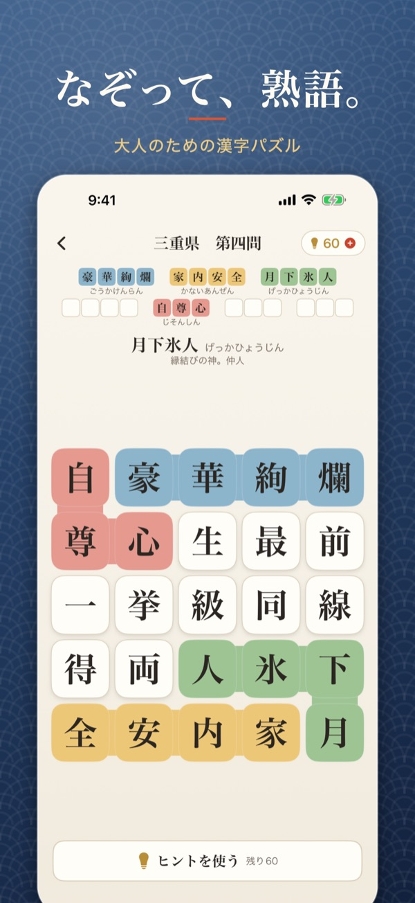
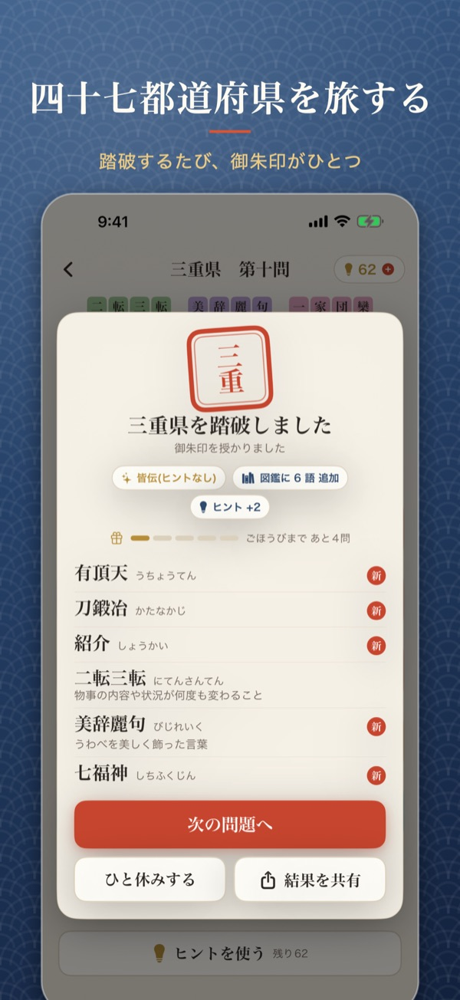
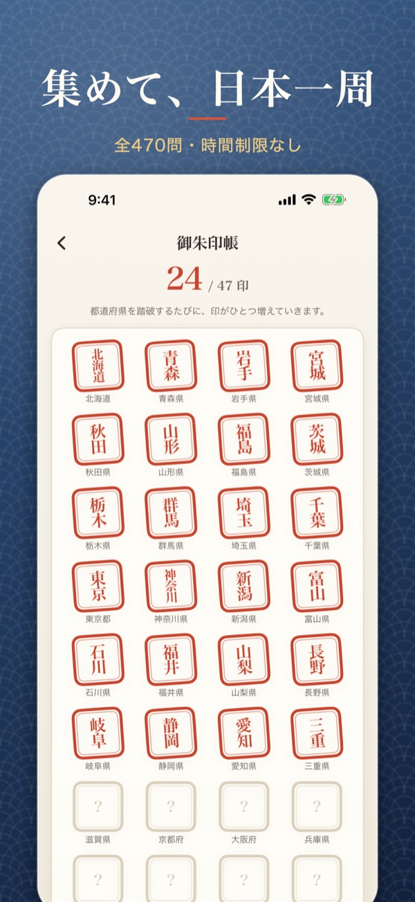
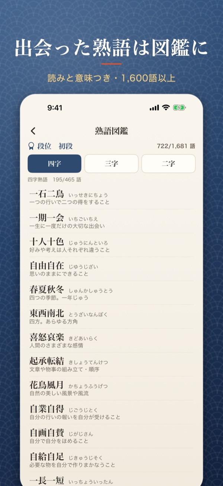

漢字たび
熟語でめぐる日本一周。となり合う漢字をなぞって熟語をつくる、大人のための漢字パズルです。
App Store で無料ダウンロード
iPhone・iPad 対応（iOS 17 以降）




こんな遊びです
- 日本一周の旅：北海道から沖縄まで、四十七都道府県をめぐる全470問。踏破するたびに御朱印が集まります。
- 今日の一問：毎朝ひとつ届く、少し手ごわい問題。連続記録がのびていきます。
- 熟語図鑑と段位：1,600語以上。四字熟語は意味つきで記録され、集めるほど段位が上がります。
- 腕だめし：集めた熟語の読みと意味をたしかめる十問の小テスト。
- 落ち着いて遊べる：時間制限なし。大きな文字、明るい画面と暗い画面、解きかけは自動保存。
よくあるご質問
どうやって遊びますか
盤面の漢字を、たて・よこにとなり合う順に指でなぞります。二字・三字・四字の熟語ができたら指をはなしてください。すべての漢字を使いきると踏破です。時間制限はありません。
答えが分からないときは
画面下の「ヒントを使う」を押すと、熟語の読みと最初の一文字が分かります。もう一度押すと、その熟語の答えが見られます。ヒントは「今日の一問」「腕だめし」「旅の記録」などで毎日手に入ります。
購入したのに反映されません
ホームの「茶屋」または「設定」にある「購入を復元する」をお試しください。購入時と同じ Apple Account でサインインしている必要があります。
機種変更で記録は引き継がれますか
遊んだ記録は端末の中に保存されます。iPhone のバックアップから復元した場合は引き継がれます。「広告をなくす」「旅のお供セット」は「購入を復元する」で新しい端末でも有効になります。
通知を止めたい
アプリの「設定」で「毎朝八時のお知らせ」を切にしてください。
お問い合わせ
不具合のご報告やご意見は、下記までお寄せください。
メール takashow0903@gmail.com までご連絡ください。